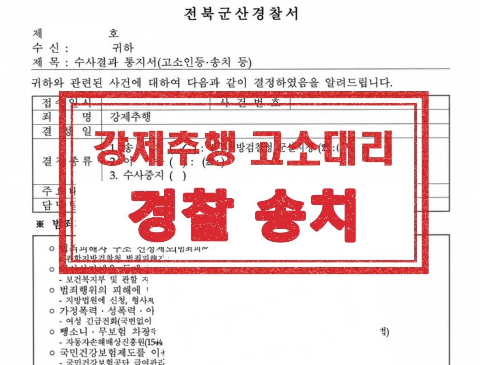
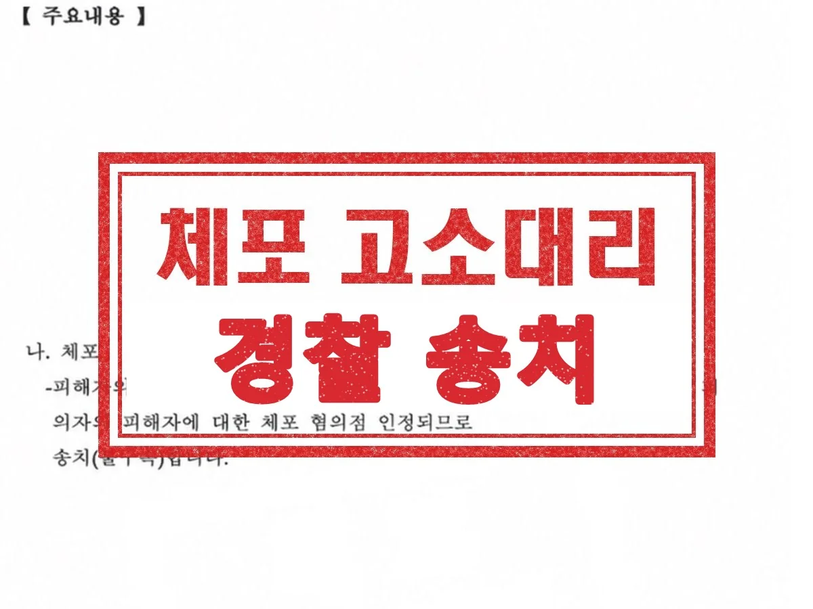

형사 · 군형사
강제추행 고소대리
직장 내에서 발생한 강제추행 사안으로, 피해자를 대리해 고소했습니다. 기습적으로 이루어져 즉각적인 반항이 어려웠던 점, 위계질서로 인해 적극적인 거부가 제한되었던 점을 적극 개진했습니다.
결과 경찰 송치
Guide
군산 고소대리 변호사 상담 안내
| 관할 | 군산경찰서 → 전주지방공소청 군산지청 → 전주지방법원 군산지원 |
|---|---|
| 관련 법조 | 형사소송법 제223조(고소권자), 제230조(친고죄의 고소기간), 제236조(대리고소), 제237조(고소의 방식) |
| 담당 변호사 | 이민규 대표변호사 (경찰대 졸업, 군산경찰서 수사과 근무) |
| 관련 분야 | 일반형사·군형사 분야 안내 → |
고소는 피해자가 직접 할 수도 있고 대리인을 통해 할 수도 있습니다. 경찰이 직접 수사하고 불송치로 사건을 끝낼 수 있는 지금의 구조에서는, 고소장에 무엇을 어떻게 적는지와 고소인 조사에서 무엇을 진술하는지가 결과를 크게 좌우합니다.
특히 범죄사실이 여러 개이거나 사기·횡령·배임처럼 사실관계가 복잡한 사건은 조사가 수사관의 질문을 따라 흘러가면서 일부 사실이 빠지기 쉽습니다. 처음부터 범죄사실과 증거를 구조적으로 정리해 두는 것이 고소대리의 핵심입니다.
Issues
억울한 사정을 나열하기보다, 어떤 죄의 어떤 요건에 해당하는 사실인지 정리해야 합니다.
범죄사실이 여러 개라면 번호·일시·장소·행위·피해·증거를 표로 정리해 누락을 막습니다.
모욕죄처럼 고소가 있어야 처벌하는 친고죄는 범인을 알게 된 날부터 6개월 안에 고소해야 합니다.
메시지, 계좌 내역, 녹음, 게시물 캡처 등은 사라지기 전에 원본 형태로 확보합니다.
조사 중 특정 부분을 빼자는 말을 들어도 그 자리에서 정하지 말고 법률 검토 후 결정합니다.
범행 일시와 장소, 상대방의 말과 행동, 피해 과정, 처벌을 원하는 범위가 정확히 적혔는지 봅니다.
Process
01
사건 경위와 자료를 듣고 적용할 죄명과 고소 범위를 정합니다.
02
구성요건에 맞춰 범죄사실을 정리하고 증거 목록과 함께 제출합니다.
03
일정을 조율하고, 조사에 함께 출석해 핵심 사실이 빠짐없이 조사되는지 확인합니다.
04
빠진 부분은 의견서와 추가 자료로 보충하고, 불송치 결정이 나면 이의신청을 검토합니다.
Results

직장 내에서 발생한 강제추행 사안으로, 피해자를 대리해 고소했습니다. 기습적으로 이루어져 즉각적인 반항이 어려웠던 점, 위계질서로 인해 적극적인 거부가 제한되었던 점을 적극 개진했습니다.
결과 경찰 송치

술자리를 마치고 귀가하던 중 지인과 다툼이 생겼고, 상대방이 자신의 집에서 의뢰인을 나가지 못하게 한 사안입니다. 피해자를 대리해, 이동을 제한한 행위가 ‘체포’에 해당하는 점과 의뢰인의 의사에 명백히 반한 점을 적극 개진했습니다.
결과 경찰 송치
실제 수행한 사건의 결과를 의뢰인이 특정되지 않도록 정리한 것입니다. 사건의 결과는 개별 사실관계와 증거에 따라 달라지며, 과거의 결과가 다른 사건에서도 같은 결과로 이어지는 것은 아닙니다. 성공사례 전체 보기 →
Columns
조사 일정 조율, 고소 내용 철회 권유에 대한 대응, 범죄일람표 작성, 진술조서 확인과 보충자료까지.
불송치 이유 분석, 누락된 수사 찾기, 추가 증거와 불송치 사유의 연결, 법리 검토까지.
사실 적시와 모욕의 경계, 진실이어도 처벌되는 경우, 네 가지 유형의 처벌, 증거 확보 방법까지.
물증 없이도 처벌 가능한지, 혼자 조사받을 때의 위험, 피해자 국선변호사, 처벌과 합의 중 선택까지.
FAQ
분야를 정해서 연락 주실 필요 없습니다. 무슨 일이 있었는지만 말씀해 주시면 어떤 절차로 가는 사건인지 정리해 드립니다.